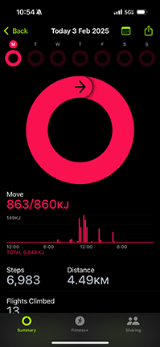
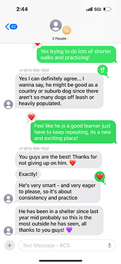
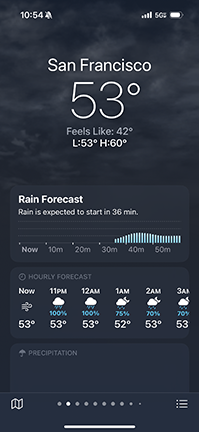
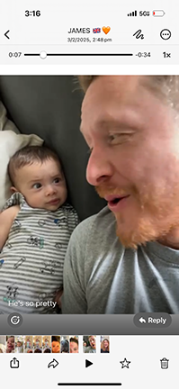

Daily Email Check
I get such an influx on my personal email, so I make myself check it everyday, always a morning chore.....

Step Tracker App
Apparently I am supposed to be taking 10k steps per day?? Trying to be vigilant and track myself with the fitness app!
(I have not got there yet).
Sourdough Recipe
I'm currently learning how to make sourdough from scratch it's a long and frustrating process so I'm constantly looking up tutorials
Spotify Homepage
I'm always listening to music on my walks to and from school, but I also love podcasts, both political and junk ones (so don't judge me!)

I Message Screenshot
I'm on I-message a lot talking to different people, this was me talking with my foster dog worker!!
My Instagram feed
I'm gen Z so unfortunately I'm always scrolling Instagram (whoops) I love getting design inspo from my explore page.

Weather of San Francisco
I walk to school every day so I always check the weather, this past few days have been unideal to say the least...
Checking maps route!
My friend wanted to try a new hotpot restaurant so I was looking it up to see how to get there (spoiler, it was way too far so I bailed).
News About Trump Deal
I check New York Times every day, It's been pretty depressing recently but want to stay up to date...
Chinese New Year!
My friend and I went to Chinatown to celebrate the new year, there were so many fireworks and it was really fun.

My WhatsApp Video
My brother just had a baby! He's been sending lots of cute videos on WhatsApp and facetiming me!
My dog!
This is Xerox (we didn't name him) I'm practicing picking him up because he's a very heavy boy and I need to lift him next time we go to the vet!